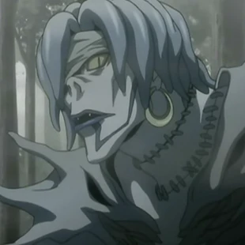

Faqja kryesore

Rem
|  | ||||
|---|---|---|---|---|
| Statusi | Mosha | Debutimi | ||
| "Njerëzit janë krijesa kaq të shëmtuara". | I paditur | I paditur | Episodi i njëmbëdhjetë | |
| Rem (レ ム, Remu) është Shinigami që i jep Misa Amane një nga Shënimet e Vdekjes që ajo kishte. Ashtu si Ryuk, Rem ka dy Shënime Vdekjeje; megjithatë, Rem nuk e mori atë me hile. Shinigami Gelus, i cili kishte rënë në dashuri me Misa, sakrifikoi veten për të vrarë vrasësin e saj të destinuar. Duke vepruar kështu ai u bë pluhur, duke lënë vetëm Shënimin e tij të Vdekjes. Rem ia dorëzoi këtë Shënim Vdekje Misa-s, pasi ai i shpëtoi jetën. | ||||
Autori i faqes: Rei Hysenji
reihysenji@hotmail.com
© E drejta e autorit @ publikuesit e Death Note:
Shueisha
Viz Media
Konami Sports Club Co., Ltd.